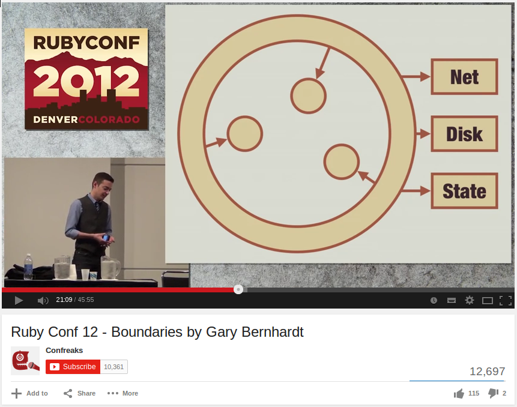

Use the space bar or arrow keys to browse the slide.
Some of the images are pretty big, so if you see an empty slide then wait a bit.
青
青
1. green; if about grass, plants, mountain etc.
2. blue; if about the sky, a stone etc.
3. black; if about hair, cloth etc.
4. young
青
生 “growth of plants”
丹 “cinnabar”
Cinnabar was used for dying items red, implying color. Giving the meaning “color of growing plants”, hence blue-green.
Functional Programming in Ruby
Frozen Rails, Helsinki
11/12 September 2014

@plexus

Programming Paradigms
Imperative Programming
State + Instructions
Modeled after the machine
Evolutionary Steps
Procedural, group instructions
Object oriented, group state
Still imperative at heart
Place Oriented Programming
PLOP
PLOP
State is kept in “places”
Old information is overwritten with new
But real facts don’t change, they incorporate time
{ date: '2014-09-10', temperature: 19 }
{ date: '2014-09-11', temperature: 17 }
Values
Not state, but Immutable Values
Can be “simple”: 42, :foo
Or composite, lists, sets, maps
Pure Functions
Same input ⇒ same output
No observable side effects
Follows naturally from using values
An expression is said to be referentially transparent if it can be replaced with its value without changing the behavior of a program.
Referential Transparency
Memoizable, Lazy evaluation
Parallelizable
Easy reasoning, refactoring, debugging, testing
Functional programming goes a long way towards avoiding the problems of state-derived complexity. This has very significant benefits.
The main weakness of functional programming is that problems arise when the system to be built must maintain state of some kind.
Times Are Changing
1995 Ruby
2003 Scala
2005 F#
2007 Clojure
2012 Elixir
The future is functional/multi-paradigm
Multi-Paradigm
OOTTP: FP + Relational
Clojure: FP + Reference Types
Haskell: FP + Type System
Ruby: ?

Data Structures


{kind=link}

{kind=link}
Object Orientation
Sanity Through Encapsulation
Functional Programming
Sanity Through Purity
Ruby
Some functional inspiration
Lambdas, blocks, map, reduce, freeze
Even lazy enumerators ;)
Ruby
Still possible to code in a purely functional way
Use objects, but make them values
Have a core of “pure” domain logic
Handle state and side effects outside of that
Values in Ruby
true, false, nil
23, 42, 5.9999
:foo, :bar
Time, Date, Pathname
Gems
Immutable Structs
anima, concord, adamantium,
value_struct, value, values,
immutable_struct, immutable, attr_immutable,
value_object_struct, hamsterdam,
closed_struct, functional_accessor
class Ukulele
include Anima.new(:color, :tuning)
# def initialize(attrs)
# attr_reader :color, :tuning
# def ==(other)
# def eql?(other)
# def equal?(other)
end
u1 = Ukulele.new(color: 'green',
tuning: [:G, :C, :E, :A])
u2 = Ukulele.new(color: 'green',
tuning: [:G, :C, :E, :A])
u1 == u2 # => true
Gems
Hamster
Pure Ruby implementation of Vector, Set, Map, List
persitent-data-structures
Native implementation for JRuby
Clojr
Clojure data structures and reference types for JRuby
require 'hamster'
person = Hamster.hash(name: "Simon", gender: :male)
# => {name: "Simon", gender: :male}
person[:name]
# => "Simon"
person.get(:gender)
# => :male
friend = person.put(:name, "James")
# => {:name => "James", :gender => :male}
person
# => {:name => "Simon", :gender => :male}
Hamster.interval(10_000, 1_000_000).filter do |number|
prime?(number)
end.take(3)
# => 0.0009s
(10_000..1_000_000).select do |number|
prime?(number)
end.take(3)
# => 10s
list = Clojr::STM::Ref.new
count = Clojr::STM::Ref.new
Clojr::STM.dosync do
list.set(Clojr::Persistent::Vector.new(*1..100))
count.set(0)
end
10.times.map do
Thread.new do
10.times do
Clojr::STM.dosync do
i1, i2 = rand(100), rand(100)
old_list = list.deref
new_list.assoc(i1, old_list[i2])
new_list.assoc(i2, old_list[i1])
list.set(new_list)
count.set(count.deref + 1)
end
end
end
end.map(&:join)
p list.deref
# => [99, 10, 79, 64, 40, 59, ...]
p count.deref
# => 100